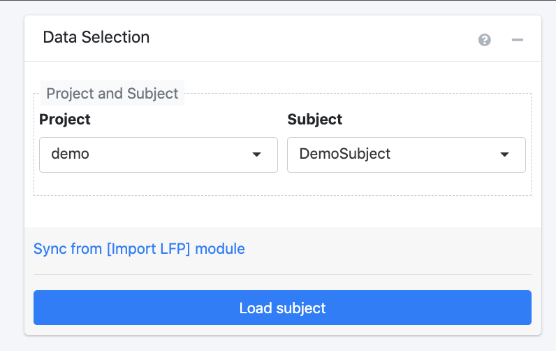

5.2 Step #2: Notch Filter
What is a notch filter? A notch filter blocks a given frequency or a narrow range of frequencies (aka a “bandwidth”) from a signal without affecting the rest of that signal. It is often used to minimize line noise interference in raw iEEG data, which helps ensure that future analyses only consider actual brain data. A common source of this interference is the amplifier used in recording set-ups to convert electrode signals into a form readable by the computer. This interference is commonly introduced at 60 Hz, since that is the standard frequency used in the North American electrical grid system.
To apply the notch filter, RAVE performs a fast fourier transform (FFT) of the signal. To learn more about FFT, visit the Q&A section at Notch Filter.
To apply the notch filter to your data, follow the steps below.
Begin in the Data Selection window to specify which data to perform the notch filter on . Use the drop down to indicate the desired project and subject. Note that pressing the Sync from [Import LFP] module link will automatically select the project and subject that was just imported in the Import Signals module.

Proceed by selecting the Load Subject button. A new screen will load with three panels: Filter Settings, Inspection, and Notch. Refer to the following screenshot for guidance.

Sample Notch Filter Screen
Filter Settings: Begin my indicating the desired configurations for the filter(s).
Base frequency refers to the frequency introduced by the amplifier that should be removed. By default, this is set as 60 Hz as that is the frequency introduced by most iEEG amplifiers.
x Times sets the multipliers of the base frequency to remove by the filter. This feature accounts for harmonics (waves with frequencies that are positive integer multiples of the base frequency), which result because the signal from the amplifier is not a pure sine wave when undergoing FFT analysis. By default, this value is set as “1,2,3” based on the harmonics that commonly result in iEEG recording set-ups. This default means that 60 Hz (base frequency * 1), 120 Hz (base frequency * 2), 180 Hz (base frequency * 3) are the frequencies that the notch filter will remove.
+- Bandwidth (Hz) refers to how wide to make each filter; a higher number will remove a wider range of frequencies whereas a lower number will remove a narrower range of frequencies. Enter one number for each filter. By default, this value is set to 1,2,2 – in other words, the filters will remove the bandwidths 59 - 61 Hz (aka 60 Hz +/- 1), 118 - 122 Hz (aka 120 Hz +/- 2), 178 - 182 Hz (aka 180 Hz +/- 2) respectively.
Based on these configurations, the bottom of the panel will automatically display a summary of how many filters there are and the bandwidths each will remove.
Click the blue Apply Notch Filters button to apply the filters to the data. A pop-up will appear showing a summary of the configurations. Click “Confirm” to proceed.
Inspection: Controls settings of the figures displayed in the Notch: Inspect Signals panel located to the right.
Use the block and electrode drop down menus to select the data to display in the Notch: Inspect Signals panel. You can use the previous and next buttons to easily switch between which electrode’s data is displayed within a selected recording session.
- The window length slider controls the power range displayed for the Welch periodograms. The more the slider is moved to the right, the wider the dB range on the y-axis.
The frequency limit slider controls the frequency range for the Welch periodograms. The more the slider is moved to the right, the higher the frequencies that will be displayed on the x-axis.
The number of histogram bins slider controls how wide the voltage ranges on the horizontal axis of the histogram are, where each bin represents a vertical bar on the graph. Choosing a larger number will create narrower voltage ranges and thus more vertical bars, whereas choosing a smaller number will create wider voltage ranges and thus fewer vertical bars. Moving the slider can give a more precise look at which voltages are most represented in the electrode signal.
Notch: Inspect Signals: Displays *raw and filtered iEEG signals for each channel whose data was imported.
- The top Local Field Potential Graph plots voltage versus time in seconds to show the raw signal that was recorded from the selected electrode. The red lines on the graph reflect the normalization.
The leftmost Welch Periodogram estimates the power of the signal at its component frequencies. Before applying the notch filter, only the original graph will be shown in grey. After the notch filter has been applied, the filtered signal will be shown in red; it should visibly be evident thaat the the power of the signal is reduced at the base and harmonic frequencies. To learn more about the calculation of the Welch Periodogram, visit the Q&A at Notch Filter.
The center Welch Periodogram is the same as the leftmost periodogram, except it is transformed to have a logarithmic x-axis. This graph makes viewing the signals at lower frequencies easier.
The Histogram Original plots frequency on the vertical axis and voltage on the horizontal axis to depict how often each range of voltages occurs in the signal.
To download these figures, simply click the Download as PDF link at the bottom of the Inspection panel. This will generate a PDF file in a new tab with a slide for each electrode within each block.
Now, use the menu at left to proceed to the wavelet module!